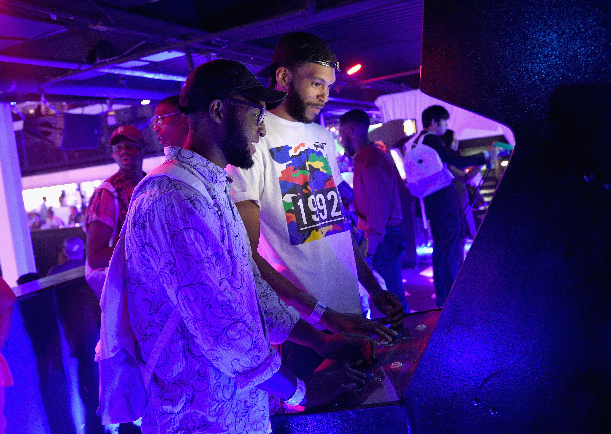
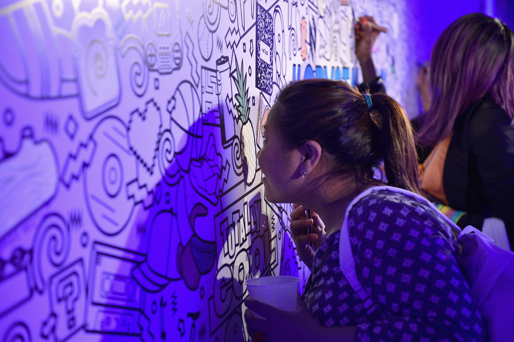

Crystal Pepsi: Summer of ’92

Crystal Pepsi relaunched to the tunes of a dope night at Terminal 5 in NYC! Some of the 90’s most slammin’ acts raised the roof to celebrate the in-store release of Crystal Pepsi in the US. Fans at the Summer of ‘92 event jammed to their favorite 90’s artists, including Salt N Pepa, En Vogue, Biz Markie, and Lisa Loeb. It was da bomb!
And it wasn’t just a concert: Terminal 5 got a complete Crystal Pepsi makeover. Guests were able relive the 90’s by cruising the mall for some most excellent gear (no fashion victims here!), get their hair crimped or faded at the Cut & Style Salon, hit the arcade to play The Crystal Pepsi Trail (our version of The Oregon Trail - duh!), or work on their tetherball skills at a special “recess” area. The night was most definitely off the hook.
Biz Markie’s more than just our friend, cause he kicked off a dope night!
Fans were definitely missing Lisa Loeb, and they only wanted her to stay.
En Vogue knew what fans wanted to hear. You go, girls!
By the time Salt N Pepa took the stage, they were pushing the crowd… real good.
Fans had to pick up their faces after the dopest finale of all time: a Salt-N-Pepa and En Vogue collab. Radical night!
It was all frosted tips and butterfly clips at the ‘90s Cut & Style Salon, where guests could walk away rocking fresh new (or old) 90s ‘dos!

Fans traveled The Crystal Pepsi Trail, our take on The Oregon Trail, in hopes of reaching the fabled Crystal Pepsi Fountain at the trail’s end!
Fans we’re also sent to recess for the first time in years. Recalling mad tetherball and four square skills, they forgot all about nap time.

And if that wasn’t enough to throw guests right back into the best days of their childhoods, we even had a 90s Scent Station open to do the dirty work for us…
Fans jammed to the sounds of the 90s live at the Crystal Pepsi Summer of ‘92 event at Terminal 5.
Bummed you missed out on a super cool night? Don’t be salty - you can still play The Crystal Pepsi Trail online at CrystalPepsi.net to earn Pepsi Pass points toward phat CP merch! And don’t forget to pick up your own frosty bottle of Crystal Pepsi - in stores across the nation now!
Crystal Pepsi: Summer of ’92
Crystal Pepsi relaunched to the tunes of a dope night at Terminal 5 in NYC! Some of the 90’s most slammin’ acts raised the roof to celebrate the in-store release of Crystal Pepsi in the US. Fans at the Summer of ‘92 event jammed to their favorite 90’s artists, including Salt N Pepa, En Vogue, Biz Markie, and Lisa Loeb. It was da bomb!
And it wasn’t just a concert: Terminal 5 got a complete Crystal Pepsi makeover. Guests were able relive the 90’s by cruising the mall for some most excellent gear (no fashion victims here!), get their hair crimped or faded at the Cut & Style Salon, hit the arcade to play The Crystal Pepsi Trail (our version of The Oregon Trail - duh!), or work on their tetherball skills at a special “recess” area. The night was most definitely off the hook.